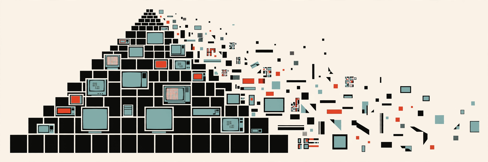
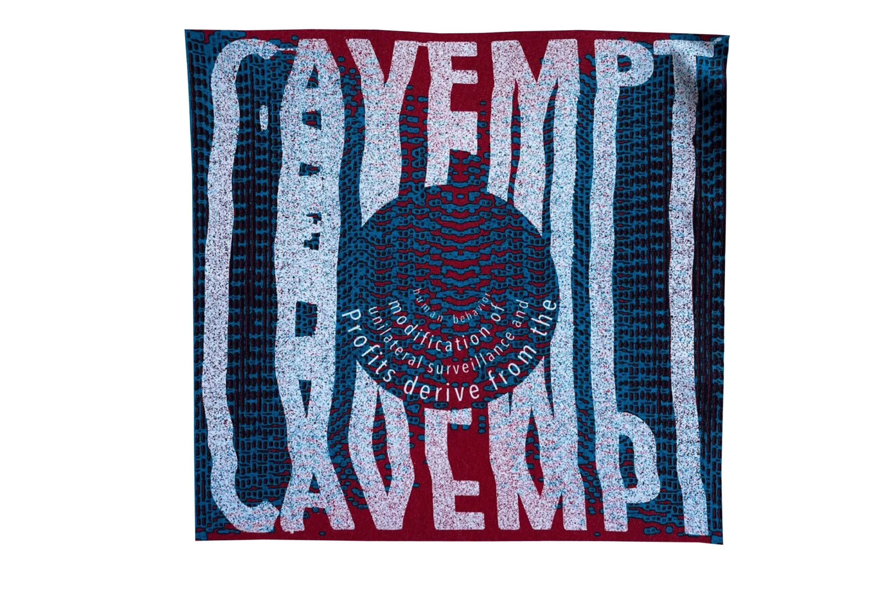
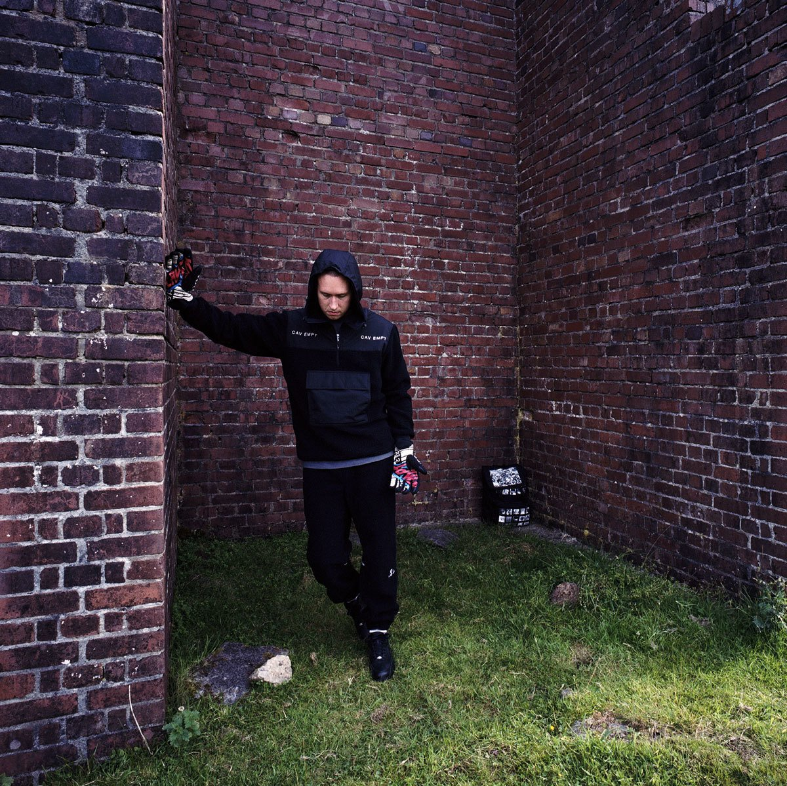
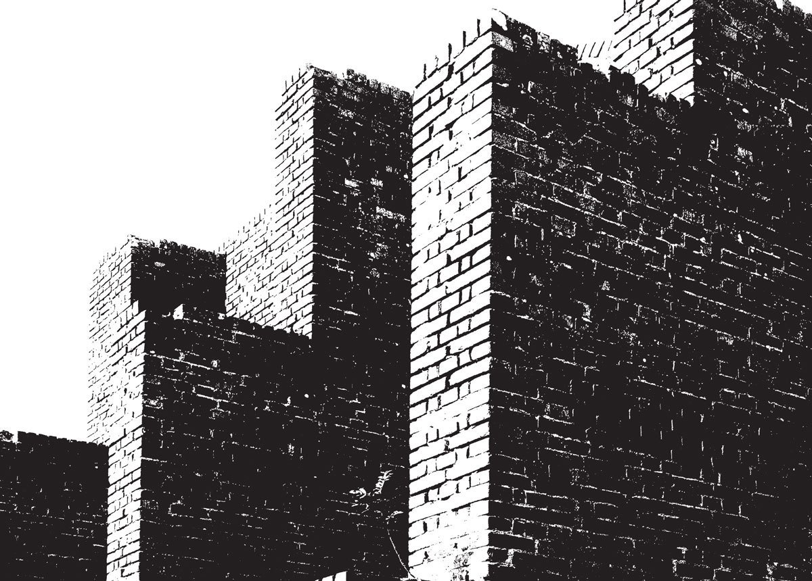
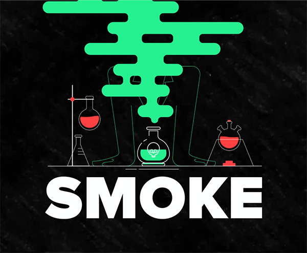
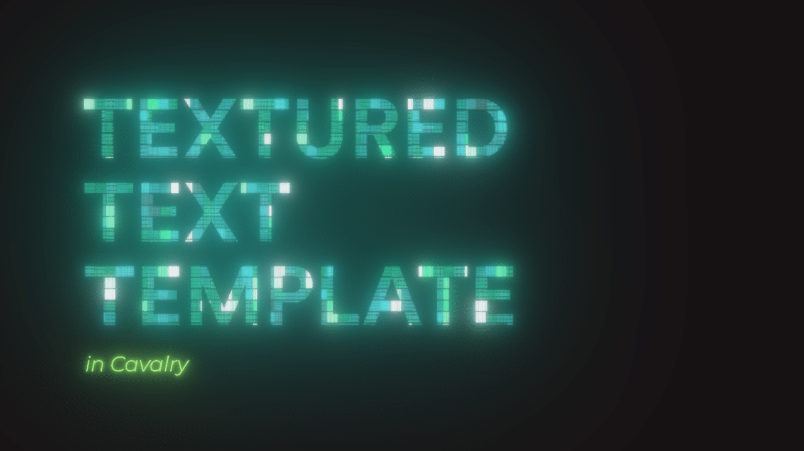

ニュース
今日のハイライト
- トップはTrizzのTaylorMade。工学データを誇張せず、そのまま絵にする判断が今日の核。
- ブランディング2本は対照的。1つの点から増殖するBioticと、打てる5文字に絞るNeueHaus。
- 広告＋モーション系を中心に7本。折る動きを2週間で作るSamsung、歯を主役にするBC Dentalまで、仕組みの作り方がそれぞれ違う。
1. 物理を誇張せず絵にする、Trizz『TaylorMade Beautiful Machine』
バルセロナのTrizzが、クラブとボールの物理をCGで見せるブランドフィルム。CD Oriol Puigは「真実がすでに美しかった。工学データがエネルギーの伝わり方を正確に示していた」と語る。抽象的なエフェクトを発明するのではなく、インパクトでエネルギーがクラブ全体へ広がる過程を、正確で映画的に描く。データを制約ではなく素材にする姿勢が、プロダクトCGの参照になる。
2. 折る動きを2週間で作る、FOREAL『Samsung Galaxy Z Fold8』
折りたたみスマホのグローバルローンチフィルム。クリーンなプロダクト映像に遊びとユーモアを重ね、競合への軽い当てこすりも入れる。最初の鉛筆スケッチから絵コンテ、アニメーションテスト、リグ、最終レンダーまでわずか2週間という短さで、合理化したワークフローとテストの繰り返しで成立させた。短納期のモーション制作の進め方として具体的。
3. 1つの点から増える、Mucho『Biotic』ブランディング
合成細胞SpudCellを扱う非営利団体Bioticのアイデンティティ。マークは最も単純な形である黒い点1つ。そこからKarl Simsの反応拡散ソフトで模様が枝分かれし、増殖して、名刺、冊子、トート、ステージ画面まで同じ点が広がる。白黒を基本にライムは小さなアクセントだけに抑える。「Out of one, many.（1つから、多くへ）」という言葉と形が一致した、生成系ロゴの好例。
4. 打てる5文字がロゴになる、the Büro『NeueHaus』
独立した専門家ネットワークNeueHausの刷新。ロゴはカスタム図形ではなく、キーボードで打てる5文字「I \ I - I」だけ。メンバーが投稿やコメントにそのまま打てることを優先した。書体はLL BradfordとABC Favoritの2種で組み、動きは装飾ではなく基盤として、Anime.jsでバネのある遷移や箱の変形を先に作ってから全体へ広げた。引き算と「使えること」を優先したプラットフォーム型ブランディング。
5. 流行は捨てられても歯は残る、BC Dental Association『Forever Teeth』
CossetteとMagic Circle Workshopによるカナダ・BC州歯科協会のキャンペーン。フィジェットスピナーや巨大タンブラーなど毎年出ては忘れられる流行品と対比し、「残るためにあるもの」として歯を置く。フィルムとキャンペーン用スチルを同じ撮影で撮り、OOHまで展開した。シンプルな1行のアイデアを、撮影設計から一貫させる広告の型として読める。
6. ビールと水を交互に、Stella Artois『HO H2O HO』
南アフリカのホリデー向け適正飲酒キャンペーン。説教調の啓発にせず、クリスマスソングの言葉遊びに乗せて「ビール、水、ビール」というゼブラ飲みを真ん中に滑り込ませた。ブランド自体がクリスマスの贈り物として生まれた由来も使い、楽しさの中に責任を置く構成。啓発広告を重くしない方法として参考になる。
7. 番組表で自動送出する「コンテンツスイッチャー」、JUNS『LiveCommander PRO』
スイッチャーにAI素材生成、番組編成、自動送出までを集約した放送・配信システム。1週間分の番組表に素材やカメラ入力をドラッグ＆ドロップで配置し、時刻に自動送出する。AIでテロップとナレーションを作る機能やL字編集も備え、ノートPC型は屋外イベント、ラック型はCATVや副調整室を想定する。少人数で「放送局」を持つ形が、配信制作の道具立てとして具体化してきた。
特集 ― デザイン特集マガジン・第13号

古い機械で現在を疑う
――C.E（CAVEMPT）とSK8THINGのグラフィック
ブランドのタグに、警告が縫い込まれている。「買い手よ、注意せよ」。ラテン語の caveat emptor を縮めた CAV EMPT、C.E は、売る側が買い手に警戒を促すという、消費の現場では倒錯した名前を持つ。その名前の出どころはフィリップ・K・ディックの小説『ユービック』に登場するタトゥーだという。グラフィックを担うのは SK8THING（中村晋一郎）。美術教育は受けておらず、藤原ヒロシに Mac の使い方を教わって独学で身につけたと本人が語っている。その人物が BAPE の初期グラフィックを主導し、Billionaire Boys Club のロゴと初期シーズンのグラフィックのほぼ全てを作り、2011年に Toby Feltwell、Hishiyama Yutaka と自分たちのレーベルを始めた。今号は、C.E のグラフィックが「古いテクノロジー」をなぜ執拗に使い続けるのかを解剖する。
勉強ポイント
- 時代遅れの素材は、ノスタルジーではなく批評の道具になる：旧型モニターや SIM カードなど「役目を終えた形」を置くと、最新であることが前提の画面に時間の断層が生まれる
- 文字は読ませる前に、まず質感として歪める：拡大コピー的なノイズと変形でタイポグラフィを「情報」から「物質」に戻すと、ブランド名自体がグラフィックになる
- リサーチと成果物の接続を、あえて直接にしない：本人が「つながりが文字で説明できない部分にこそ面白さがある」と語る距離の取り方は、モチーフを説明に回収させない設計である
1. タグの中の二台のモニター ― 出自をアイコン化する
C.E のタグには、初期の Mac を思わせるモニターが二台並ぶ。Grailed の SK8THING 特集は、このモニターが彼がデザインを学んだ最初の機械への言及だと読む。出自を物語として語らず、タグという最小のフォーマットに圧縮して全製品へ繰り返し付ける。ここが効いている。経歴の説明文は読まれないが、タグは毎回目に入る。
同じ圧縮はモチーフの選び方にも通じる。C.E の服に現れるのは BlackBerry、SIM カード、CD、通信会社のロゴ、初期インターネットのブラウザ窓や Mac OS のアイコンといった、つい最近まで現役だったのに急速に古びたものばかりだ。Feltwell は Dazed に対して「テクノロジーは、それが常にあるものではなかったことを忘れさせるように作用する。古いテクノロジーを見ることで、現在の本当の姿に焦点が合う」と語っている。つまり古さは懐かしさのためではなく、見えなくなった現在を可視化するための露出調整なのだ。BAPE 時代に MS Paint 風のグラフィックや、Ape Head をピクセル化した20周年シャツを作っていた時点で、この「解像度を落として見せる」手法は既にあった。

2. 読めそうで読めない文字 ― ノイズを版として使う
上のプリントを見てほしい。CAVEMPT の文字は画面いっぱいに引き伸ばされ、波打ち、粒子にまみれている。中央の円には英文が同心円状に組まれ、読もうとすれば読めるが、まず目に入るのは意味ではなく質感だ。企業ロゴのパロディや認証マークの転用も含め、C.E のグラフィックは「記号の形だけを借りて、中身をずらす」操作の連続でできている。
分析として言えば、これはシルクスクリーンの出自と地続きだ。スケートクルーが自分たちの絵を世に出す一番安い方法がスクリーン印刷だった時代に育った書き手にとって、インクの滲みや版のズレは失敗ではなく標準の質感だったはずだ。デジタルで作りながらデジタルの清潔さを拒む理由がここにある。映像に置き換えれば、解像度やフレームレートを意図的に落とす判断は「粗さ」ではなく、時代を指定する演出になる。
もう一つの文字の使い方が引用だ。2017年春夏のキャップには、マルクス主義の学術集団 Krisis Group のエッセイから「充実した人生の幻想を作るためにデザインされた、馬鹿げた高級品」という一文が刺繍された。自社の商品に、自社の商品を否定する文を縫う。スローガンを作るのではなく、既にある硬い文章を拾ってきて服に載せる編集の手つきが、C.E の言葉の全てに共通している。
3. ジッグラトと射撃場 ― モニュメントを借りる
2015年秋冬のルックブックは、それまでの SF 風のキャンペーン映像をやめ、写真家 Jason Evans が英国の荒野にある旧国防省の射撃場で撮影した。写っているのはレンガの巨大な構造物と、その壁にもたれる Joy Orbison だ。Feltwell は i-D に「C.E はずっとモニュメントに興味があり、ジッグラトによく言及する。それは時間を止めて現実を支配したいという欲望の表現だが、結局は作った権力の意図と逆のことを証明してしまう。何も永遠ではない」と語っている。C.E の象徴とされるジッグラト（古代メソポタミアの階段状の塔）も、同じ読みで選ばれている。永遠を装う形ほど、崩れる前提が似合う。

ルックブック内の白黒ページでは、このレンガ壁が強いコントラストで版画のように処理され、建築がそのままグラフィックの版になっている。服を見せる前に「崩れゆくモニュメント」という一枚の絵を置くことで、コレクション全体の読み方が先に決まる。理想化された着用イメージを作らない、というのも彼らの明言する方針で、モデルには知っている音楽家を起用し、顔を隠すことさえある。

この言語は大きな舞台でも変わらない。2019年1月の Nike とのカプセルでは、Air Max 95 の全面にピクセル状のデジタルカモを載せ、タンには通常の Air Max バッジに代えて C.E と Swoosh の楕円ロゴを置いた。トラックスーツやジャージを含む構成について Feltwell は「2000年代初頭、Nike のトラックスーツと Air Max はロンドンの通りの制服だった」と Nike の取材に語っている。大手との仕事でも、やることは同じで、自分たちの過去の風景を現在の製品に重ねることだった。
C.E のグラフィックを一言でまとめるなら、「新しさの反対側から現在を描く」方法だ。古い機械、崩れる塔、歪んだ文字。どれも未来を描くための素材として過去を使っている。次の新作を追う前に、自分の机の上にある「もう古い形」を一つ拾ってみること。そこに、まだ使える批評が残っているかもしれない。
出典
- The Graphic Genius of Sk8thing — Grailed：https://www.grailed.com/drycleanonly/sk8thing-graphic-history
- exclusive: step inside cav empt's fall/winter 15 dystopian look book — i-D：https://i-d.co/article/exclusive-step-inside-cav-empts-fallwinter-15-dystopian-look-book/
- BUYER BEWARE: A LOVE LETTER TO CAV EMPT — sabukaru：https://sabukaru.online/articles/the-retro-futurist-renegade
- Cav Empt x Nike Air Max 95: Where to Buy Today — Highsnobiety：https://www.highsnobiety.com/p/cav-empt-nike-air-max-95-release-date-price-info/
AE／Cavalry チュートリアル・表現コーナー
ノイズとタイルで質感を作る
AEはシェイプだけで作る stylized な煙、Cavalryは小さなテクスチャを敷き詰めて文字を出すリビール
プラグインなし、シェイプの組み合わせだけで煙らしく ― How to Make Smoke in After Effects with Shape Modifiers／Motion Design School

丸をRepeaterで連ね、Merge Pathsで1つに溶かし、Round Cornersで角を落として煙の塊を作る解説。仕上げにWiggle Transformでランダムな揺れを足すことで、キーフレームを打ち込まずにモクモク感が出る。記事後半では対案としてFractal Noise版（Contrast 200／Brightness -50、Evolutionを回す）も手順付きで紹介され、ベクターの煙と質感の煙を使い分けられる。
表現ポイント：核は「形はマージで溶かし、動きはWiggleに任せる」こと。ロゴから立ち上る煙、湯気、ポップな爆発など、実写合成ではないグラフィック寄りの煙が欲しいCM・MVで即戦力。Fractal Noise版は背景の雲・霧・質感マットにも転用できる。
ベクターを増やさず、テクスチャで文字を出す ― Advanced and Responsive Textured Text Reveal in Cavalry／Kamil K

Call of Duty – Black Ops 7のActivisionロゴに着想を得た、グリッチ感のあるテキストリビールのテンプレート化解説。当初はDuplicatorで数千個のベクター片を作ったが重すぎたため、50%グレーの小さなタイル画像をImage Shaderで敷き詰める方式に転換。テキストの寸法からコンポサイズを自動で決め（Math Nodeで余白追加）、Duplicatorで画面全体を覆い、Behaviour Mixer＋Value Solver＋Noiseで1片ずつ順に出現させる。最後はAEでグローと色を足して仕上げる二段構え。
表現ポイント：核は「細部はベクターで作らず、軽いテクスチャを量産して色だけ差し替える」こと。文字を変えればコンポも敷き詰めも自動で追従するため、タイトル違いを量産する告知・ゲーム系・テック系の案件でテンプレートとして強い。
今日試すなら：まずAEの煙から。丸＋Repeater＋Merge Pathsだけで最初の塊ができ、10分で感触が掴める。Cavalryの方はタイル＋Value Solverの出現だけを先に試すと核が分かる。